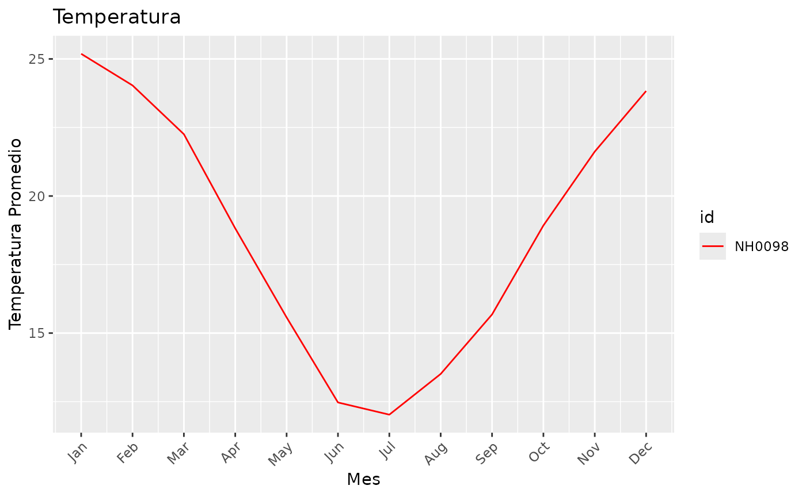

Introducción
El paquete windyR está diseñado para facilitar la
descarga, manipulación y visualización de datos de estaciones
meteorológicas. En esta guía se describe cómo utilizar cada función
principal del paquete, incluyendo ejemplos detallados.
Requisitos Previos
Antes de comenzar, asegúrate de tener los paquetes necesarios instalados en R:
library(windyR)
library(dplyr)
#>
#> Attaching package: 'dplyr'
#> The following objects are masked from 'package:stats':
#>
#> filter, lag
#> The following objects are masked from 'package:base':
#>
#> intersect, setdiff, setequal, union
library(ggplot2)
library(lubridate)
#>
#> Attaching package: 'lubridate'
#> The following objects are masked from 'package:base':
#>
#> date, intersect, setdiff, unionFuncion 'descarga_datos'
Esta función descarga datos de una estación meteorológica específica desde un repositorio en línea y los guarda en un archivo CSV. También lee los datos y los carga en un data frame.
La función descarga_datos utiliza los siguientes
parámetros:
-
id_estacion: Un string que representa el ID de la estación meteorológica (por ejemplo,"NH0046"). -
ruta_archivo: Un string que especifica la ruta completa donde se guardará el archivo CSV descargado.
Un ejemplo de uso para esta funcion es:
NH0098 = descarga_datos("NH0098", "estacion_NH0098.csv")
#> Warning: One or more parsing issues, call `problems()` on your data frame for details,
#> e.g.:
#> dat <- vroom(...)
#> problems(dat)
#> Rows: 23733 Columns: 35
#> ── Column specification ────────────────────────────────────────────────────────
#> Delimiter: ","
#> chr (2): id, direccion_viento_1000cm
#> dbl (21): temperatura_abrigo_150cm, temperatura_abrigo_150cm_maxima, temper...
#> lgl (11): temperatura_intemperie_50cm_minima, temperatura_inte_5cm, tempera...
#> date (1): fecha
#>
#> ℹ Use `spec()` to retrieve the full column specification for this data.
#> ℹ Specify the column types or set `show_col_types = FALSE` to quiet this message.Funcion 'tabla_de_temperatura_estaciones'
Esta función genera una tabla resumen de las temperaturas mínima, máxima y promedio por estación a partir de los datos descargados.
Utiliza informacion de la variable 'datos'. Este es un
data frame que contiene datos de temperatura con al menos las columnas
id (identificador de la estación) y temperatura_abrigo_150cm
(temperatura medida a 150 cm del suelo).
Un ejemplo de uso para esta funcion es:
tabla_de_temperatura_estaciones(NH0098)
#> # A tibble: 1 × 4
#> id min_temp max_temp mean_temp
#> <chr> <dbl> <dbl> <dbl>
#> 1 NH0098 -17.4 37.4 18.6Funcion 'grafico_mensual'
Esta función genera un gráfico de líneas que muestra la temperatura promedio mensual por estación. Permite personalizar los colores y el título del gráfico.
Parámetros de la función grafico_mensual
La función grafico_mensual utiliza los siguientes
parámetros:
-
datos: Un data frame con las columnas:-
fecha: Fecha de la observación en formato “YYYY-MM-DD”. -
id: Identificador de la estación. -
temperatura_abrigo_150cm: Temperatura medida a 150 cm de altura.
-
colores: Un vector opcional de colores para cada estación. Si no se especifica, se seleccionarán colores aleatorios.titulo: Un string opcional que define el título del gráfico. Por defecto, es"Temperatura".
Un ejemplo de uso para esta funcion es:
grafico_mensual(NH0098, colores = "red", titulo = "Temperatura")